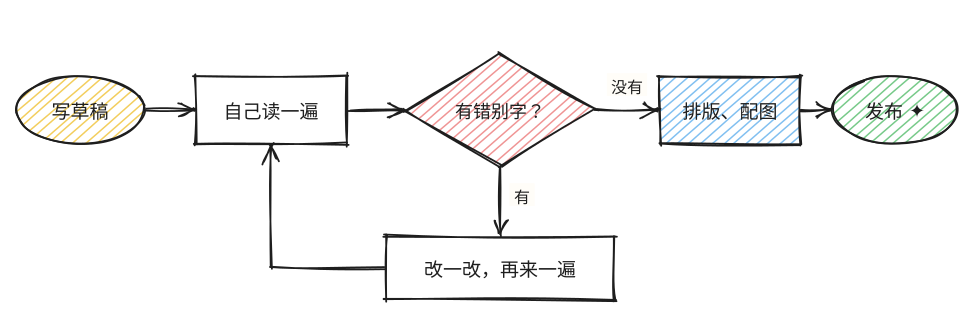
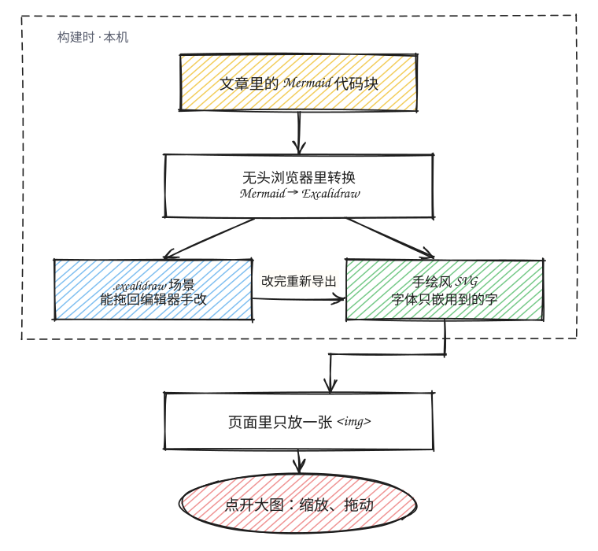

~/notes/ cat 手绘图表.md
图表也可以像手画的
文章里的流程图画成手绘风：线条有点抖、色块是斜线涂的。点一下图，在大图里缩放、拖着看细节。

写文章的时候只写 Mermaid 文本，构建时在无头浏览器里把它转成 Excalidraw 场景，再导出 SVG。页面上只是一张普通的
<img>，不跑任何画图脚本。

查看器打开时整张图刚好放进窗口，最多放大到 4 倍；按钮、滚轮、双指、双击和键盘（+ − 0、方向键）都能操作，Esc 或点图外面关闭。